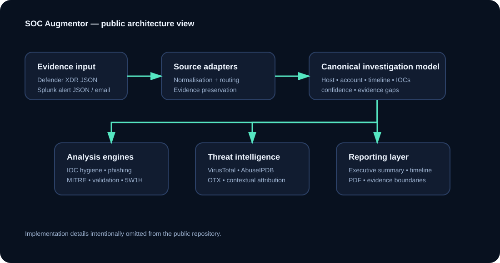
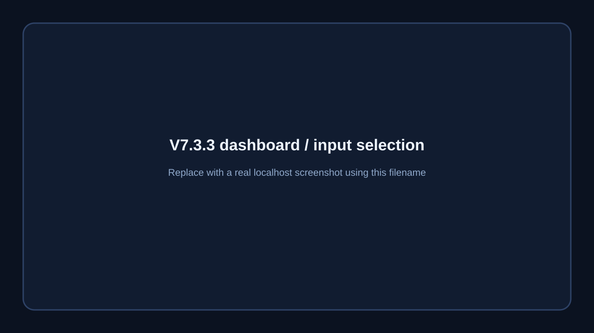
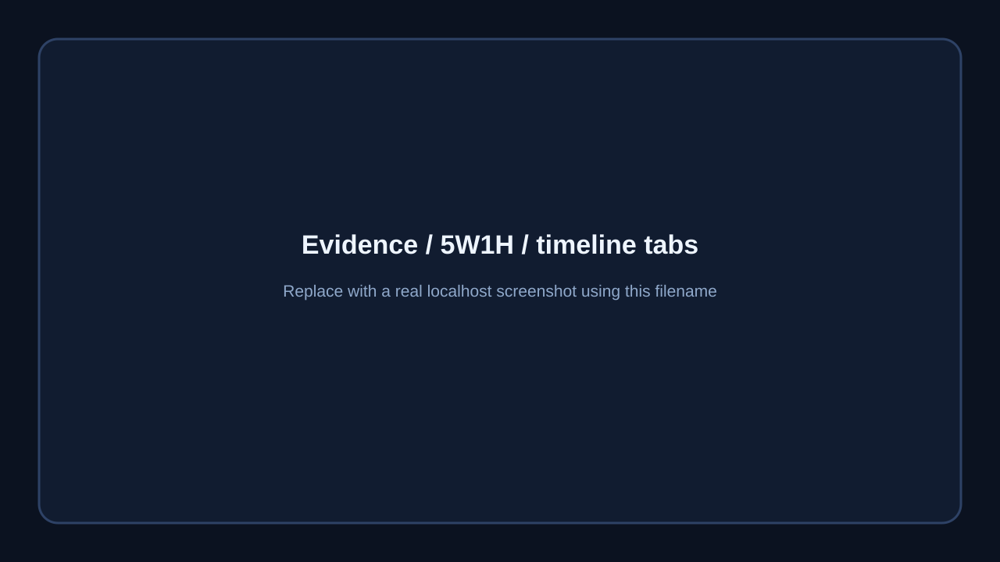
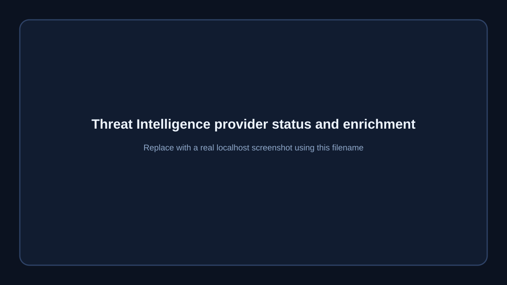

SOC Augmentor is a locally hosted investigation assistant built to structure security-alert evidence, enrich eligible indicators, map activity to MITRE ATT&CK and generate analyst-ready investigation reports. It is designed to augment—not replace—the analyst.
Source adapters convert Defender XDR and Splunk alert JSON into a common evidence model while retaining source context.
Findings, timeline, 5W1H, confidence, MITRE ATT&CK, recommendations and evidence gaps are generated from the supplied artefact.
Eligible indicators can be checked against VirusTotal, AbuseIPDB and OTX without automatically converting reputation into attacker attribution.
SOC Augmentor is intentionally evidence-bound. A JSON alert rarely contains enough evidence to complete a Tier-2 investigation. The report therefore distinguishes what is established, what is absent from the supplied artefact, why that matters, and which telemetry should be reviewed next.

The public package is wired for real V7.3.3 screenshots. Replace the six SVG placeholders with PNG captures using the same filenames listed in assets/screenshots/README.md.


